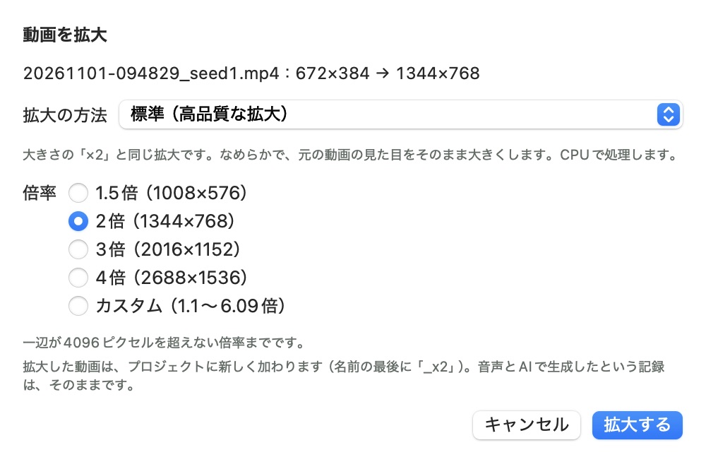
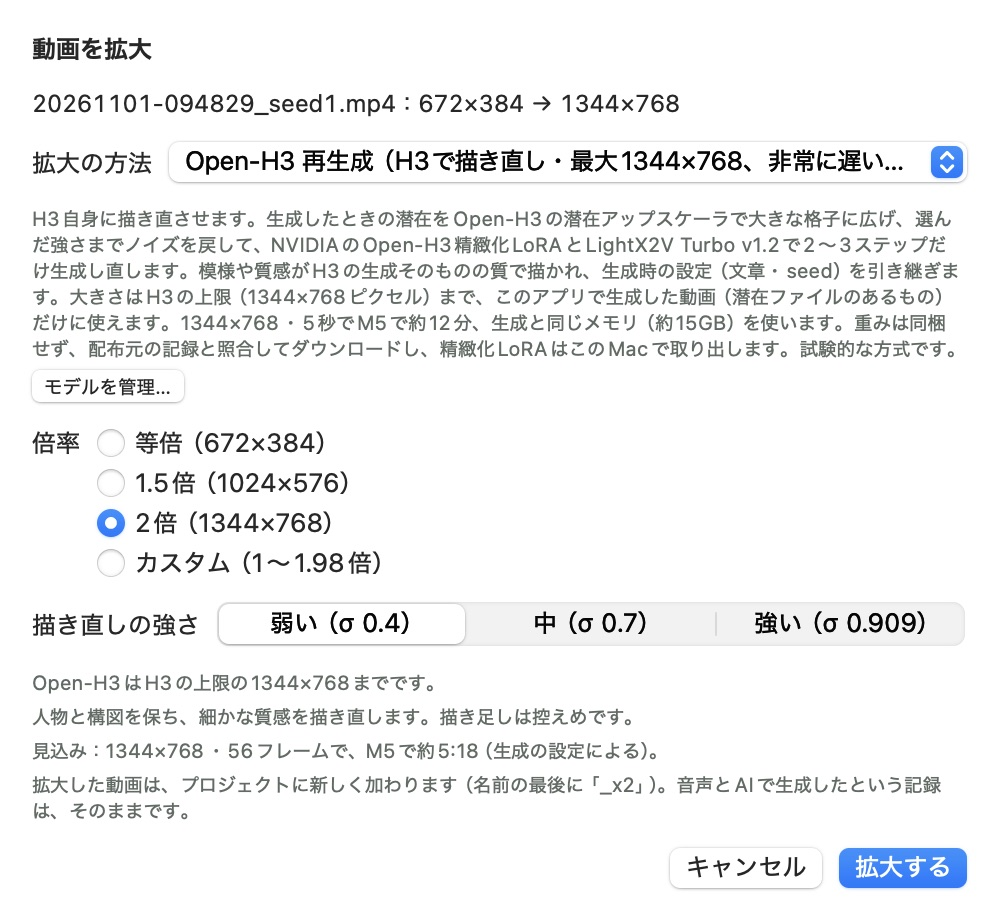

動画の拡大
できあがった動画を、あとから大きくしたり、同じ大きさのまま細部を描き直したりする手順です。方法は9つあり、「早さ」と「描き足しの強さ」が大きく違います。まず仕上がりを見比べて、迷ったら方法の選び方をご覧ください。
仕上がりを見比べる
同じクリップを方法ごとに2倍（672×384から1344×768）にしたものを、左右に並べて比べられます。映像と左右の方法を選び、「静止画」で細部を、「動画」で動きを見てください。


動きは、動画を「4分の1の速さ」にすると見比べやすくなります。髪や背景の細部が動く間に揺れないか、顔が途中で変わらないかを見てください。「顔のアップ」でSeedVR2とSeedVR2 動画を並べると、1フレームずつでは目のまわりの肌やまつ毛が毎フレーム描き直されて揺れ、動画として描くと落ち着くのが分かります。自然に見えるかどうかは好みと映像によるので、自分の動画でも短いクリップで試すことをおすすめします。
| 方法 | かかった時間 | 隣のフレームとの差 |
|---|---|---|
| 標準 | 2秒 | 2.10 |
| MetalFX | 2秒 | 2.39 |
| Real-ESRGAN 汎用 | 4秒 | 1.77 |
| Real-ESRGAN アニメ | 4秒 | 1.83 |
| SwiftVR | 18秒 | 1.86 |
| SwiftVR 4倍で生成してから縮小 | 約1分 | 1.91 |
| SeedVR2 | 約5分 | 2.79 |
| SeedVR2 動画 | 約10分 | 2.82 |
| Open-H3 弱い | 約6分 | 2.19 |
| Open-H3 中 | 約6分 | 2.87 |
| Open-H3 強い | 約7分30秒 | 4.16 |
どのクリップも、H3cAppで文章だけから生成した動画です。Open-H3の結果も含めて1回ずつ拡大し、同じ場所を640×360で切り出しています。動画はページ用に圧縮し直しているので、細かな粒状感は実際の出力より減っています。
拡大の手順
H3cAppで作った動画だけでなく、ほかの動画ファイルも拡大できます。どの方法もアプリの中で処理し、ほかのプログラムは使いません。
- 拡大する動画を選びます。次の3つの入口があります。
- 画面に表示している動画：メニューバーの「動画」→「表示中の動画を拡大…」
- プロジェクトの動画：「プロジェクトの動画…」で動画の「その他」→「拡大した動画をつくる…」
- ほかの動画ファイル：「動画」→「動画ファイルを拡大…」
- 「拡大の方法」のメニューから方法を選びます。下に方法の説明が出ます。モデルの準備が必要な方法は、ここで「モデルを準備…」を押します（手順）。
- 「倍率」を選びます。その方法で使える倍率だけが、できあがる大きさと一緒に表示されます。
- 「拡大する」を押します。プロジェクトの動画は、名前の最後に倍率（2倍なら
_x2）を付けた動画としてプロジェクトに増えます。プロジェクトの外の動画は、次に保存先を選びます。 - 終わるのを待ちます。画面の上に進み具合が出ます。「中止」でいつでも止められます。プロジェクトの外の動画は、終わったときのメッセージの「Finderで表示」で保存した場所を開けます。

初めての方法は、短い動画で試すのがおすすめです。SeedVR2とOpen-H3は5秒の動画でも何分もかかります。結果の好みは映像によって変わるので、短いクリップで見比べてから長い動画に使うと無駄がありません。
方法の選び方
やりたいことから選びます。上の行ほど早く終わります。
| やりたいこと | 選ぶ方法 |
|---|---|
| 見た目を変えずに、すぐ大きくしたい | 標準 |
| 標準より少しくっきりさせたい | MetalFX |
| 実写や一般の映像に、短い時間で細部を足したい | Real-ESRGAN 汎用 |
| アニメやイラストの線と色をくっきりさせたい | Real-ESRGAN アニメ |
| 肌・髪・布の質感を取り戻したい | SwiftVR |
| 顔のアップなどを、目や眉を変えずに整えたい | SwiftVR 4倍で生成してから縮小 |
| 大きさを変えずに細部だけ整えたい（等倍） | SwiftVR 4倍で生成してから縮小（最初に試す） |
| まつ毛や肌のきめなど、1フレームごとの細部を最優先したい | SeedVR2 |
| 模様や質感を、H3の生成そのものの質で描き直したい | Open-H3 再生成 |
| SeedVR2の細部のまま、髪や肌が前後のフレームで揺れないようにしたい | SeedVR2 動画 |
描き足しが強い方法ほど、元の映像にないものが現れやすくなります。人物の顔が変わると困る動画は、標準か「SwiftVR 4倍で生成してから縮小」を選びます。
倍率の決め方
画面には、その方法とその動画で使える倍率だけが、拡大後の大きさと一緒に出ます。3倍や4倍が出ないときは、下の上限に当たっています。
- 1.5倍・2倍・3倍・4倍：使えるものが一覧に出ます。
- カスタム：欄に小数第2位までの倍率を入力します。横のボタンで0.1ずつ増減でき、拡大後の解像度がその場で表示されます。使える範囲は「カスタム」の行に出ます。
- 等倍：大きさを変えず、細部だけを描き直します。AIの方法で選べます。標準とMetalFXでは、ほとんど変化しないので選べません。
| 方法 | 倍率の範囲 | 大きさの上限 |
|---|---|---|
| 標準、MetalFX | 1.1〜8倍 | 一辺4096ピクセル |
| Real-ESRGAN（汎用、アニメ） | 1〜4倍 | 一辺4096ピクセル |
| SwiftVR（2つの方法）、SeedVR2 | 1〜4倍 | 一辺4096ピクセル、かつこのMacのGPUメモリに入る大きさ |
| SeedVR2 動画 | 1〜4倍 | 一辺4096ピクセル、かつこのMacのGPUメモリに入る大きさ（24GBでは1920×1088まで。16GBでは使えません） |
| Open-H3 再生成 | 1〜4倍 | 1344×768ピクセル（H3の上限） |
Open-H3では、倍率どおりの大きさを32の倍数に丸め、上限に収まるまで縦横比に沿って下げます。たとえば672×384の2倍はちょうど1344×768で、960×544はどの倍率でも1344×768になります。すでに上限の大きさの動画は、等倍だけ選べます。
方法ごとの使い方
標準（高品質な拡大）
大きさメニューの「2倍に拡大」と同じ、高品質なリサンプリングです。元の見た目をそのまま大きくするので、いちばん元の映像に近く、ちらつきも少ない方法です。迷ったときの基準になります。準備は要りません。
MetalFX（輪郭を保つ拡大）
AppleのMetalFXで、輪郭を見ながら拡大します。標準より少しくっきりします。準備は要りません。
Real-ESRGAN 汎用（AI超解像）
AIが細部を補いながら拡大します。実写や一般の映像に向きます。細部を描き足すので、元にない模様が出ることがあります。重みはアプリに入っているので、そのまま使えます。
Real-ESRGAN アニメ（AI超解像）
線や色の面をくっきりさせます。アニメやイラスト調の映像に向きます。時間は汎用の約半分です。そのまま使えます。
SwiftVR（AI動画超解像）
動画全体を見るAIが、質感や細部を描き起こしながら拡大します。肌・髪・布の質感を取り戻したいときに使います。描き足しは強めで、輪郭に線が出ることがあります。初回にモデルの準備が必要です。
SwiftVR 4倍で生成してから縮小（質感が穏やか）
同じモデルで4倍に復元してから、選んだ大きさに縮めます。目や眉を描き直しにくく、質感が穏やかで元の動画に忠実です。等倍で整えるときも、まずこの方法を試してください。時間はSwiftVRの約5倍です。モデルはSwiftVRと共通です。
途中の4倍がGPUのメモリに入らないときは、自動でタイルに分けて復元します。4倍で一辺4096ピクセルを超えるときは、3倍、2倍の順に下げて処理します。4倍を選ぶと、結果はSwiftVRと同じです。
SeedVR2（AI超解像・細部重視、非常に遅い・試験的）
1フレームずつ描き起こします。まつ毛・肌のきめ・布地の細部はSwiftVRより強く出ますが、元の映像から離れることがあり、顔の印象が変わることもあります。毛並みにモアレが出たり、ちらつきが増えたりすることもあります。1フレームに数秒かかります。初回にモデルの準備が必要です。
SeedVR2 動画（ちらつきを抑える・非常に遅い・試験的）
同じSeedVR2-3Bに、1フレームずつではなく17フレームの窓で動画として描き起こさせます（v0.7.11から）。窓どうしは5フレームを重ねてクロスフェードするので、継ぎ目は見えません。細部の描き方はSeedVR2のままで、髪・肌・毛皮が前後のフレームで揺れにくくなります。上の比較では、動きを差し引いたフレーム間の揺れが1フレームずつより顔のアップと人物で17%、猫で13%小さくなり、顔のアップではSwiftVRやOpen-H3よりも小さくなりました。アニメでは変わりません。そのぶん細部はわずかに柔らかくなります。時間は1フレームずつの約2倍で、GPUに約13GBを使います。24GBのMacでは1920×1088まで拡大できます（1344×768より大きいときは途中の状態を8ビット、1920×1088では4ビットで持つので、出力がわずかに変わります。16GBのMacでは使えません）。重みは1フレームずつのSeedVR2と同じなので、モデルの準備は一度で済みます。
Open-H3 再生成（H3で描き直し・最大1344×768、非常に遅い・試験的）
拡大というより、H3自身に大きな画面で描き直させる方法です。SeedVR2が1フレームずつ描くのに対して、全フレームをまとめて描き直します。動きの自然さは動画によって違うので、見比べて選んでください。生成したときの文章とseedを引き継ぐので、入力は要りません。描き直しの強さを選べます。
使える動画に条件があります。
- このアプリで生成した、プロジェクトの動画だけです（隣に潜在ファイル
.h3ltが必要です。v0.5.0より前の動画と、取り込んだ動画には使えません）。 - つなげて生成した動画は、つなぐ前の各クリップに使います。
- 拡大した動画は、その元の動画から再生成します。
初回にモデルの準備が必要です。
AIモデルを準備する
SwiftVR、SeedVR2（動画も同じ重み）、Open-H3の重みはアプリに入っていないので、初回だけ準備します。標準、MetalFX、Real-ESRGANは準備なしで使えます。
- 「拡大の方法」のメニューで方法を選びます。準備がまだなら、説明の下にオレンジ色の案内と「モデルを準備…」のボタンが出ます。このあいだ「拡大する」は押せません。
- 「モデルを準備…」を押します。「モデル管理」の「拡大モデル」からも開けます。
- ライセンスの説明を読んで確認します。確認すると、ダウンロードが始まります。
- 終わるまで待ちます。配布元の記録とSHA-256で照合したあと、必要な変換や取り出しまで自動で進みます。終わると、その方法で拡大できます。
| 方法 | ダウンロード | 準備のあと |
|---|---|---|
| SwiftVR（2つの方法で共通） | 約20GB。中断しても続きから | このMac用に変換（M5で約4.6GB、ほかは約8.9GB）。変換したあとは「元の重みを削除…」で元の約20GBを消せます。ただし、アプリの更新などで変換し直すときは、もう一度ダウンロードが必要です |
| SeedVR2 | 約4.7GB。中断しても続きから | 変換はありません |
| Open-H3 再生成 | 結合LoRA 約12.5GBと潜在アップスケーラ 約0.7GB | 精緻化LoRAの部分（約4.2GB）だけをこのMacで取り出し、結合LoRAは削除します。LightX2V Turbo v1.2は、LoRAフォルダに同じ版があればそれを使います |
空き容量を確かめてから始めてください。変換や取り出しが終わるまでは、ダウンロードしたファイルと新しいファイルの両方を置く場所が要ります。
Open-H3の強さを選ぶ
Open-H3 再生成を選ぶと、倍率の下に「描き直しの強さ」が出ます。動画にノイズをどこまで戻してから描き直すかを決める設定で、強いほど描き足しが増え、元の絵から離れます。シートを開くたびに「弱い」に戻ります。
| 強さ | 結果 | 向いている使い方 |
|---|---|---|
| 弱い（σ 0.4）既定 | 人物と構図を保ち、細かな質感を描き直す。描き足しは控えめ | 同じ動画のまま質を上げたいとき |
| 中（σ 0.7） | 構図は保つが、表情や顔つきが変わることがある | 人物の顔が多少変わってもよく、描き足しを増やしたいとき |
| 強い（σ 0.909） | 描き足しは最も多い。別の人物や別の絵になることがあり、アニメが実写になることも | 元の絵にこだわらず、新しく描き起こしてほしいとき。時間は約1.3倍 |

同じ強さでも結果は動画によって変わるので、短いクリップを「弱い」から順に試すと安心です。選んだ強さは動画の記録に残ります。
時間とメモリの目安
M5・24GBのMacでの実測です。M5のテンソル演算ユニットが無いMacでは、SeedVR2は数倍かかります。
| 方法 | かかる時間 |
|---|---|
| 標準、MetalFX | 数秒 |
| Real-ESRGAN 汎用 | 800×544の1フレームに約0.08秒、1620×1080で約0.32秒 |
| Real-ESRGAN アニメ | 800×544の1フレームに約0.05秒、1620×1080で約0.18秒 |
| SwiftVR | 960×544の5秒を2倍に：約40秒 |
| SwiftVR 4倍で生成してから縮小 | 544×960の5秒を2倍に：約4分 |
| SeedVR2 | 672×384の5秒を2倍に：約8分（GPUに約10GB）。960×544の5秒を2倍に：約21分（約13GB） |
| SeedVR2 動画 | 672×384の5秒を2倍に：約17分（約13GB）。960×384の5秒を1920×768に：約26分（約15GB）。960×544の5秒を1920×1088に：約35分（約17GB、24GBのMacの上限） |
| Open-H3 再生成 | 672×384の56フレームを2倍に：弱いで約4〜5分、強いで約5分30秒〜7分。1344×768の5秒は強いで約12分（メモリは生成と同じ約15GB） |
Open-H3では、シートに今の動画と強さでの見込み時間が表示されます。SwiftVR、SeedVR2（2つの方法）、Open-H3はGPUをまるごと使うので、生成・キャッシュ作成・動画の取り込みの最中は使えません。終わってから拡大してください。
拡大したあとの動画
- 音声と記録：音声と、AIで生成したというファイルの情報は、そのまま残ります。
- 元の動画：元の動画はそのまま残ります。元の動画そのものには保存できません。
- 保存先：書き終えてから置き換えるので、途中で失敗したり中止したりしても、保存先に元からあったファイルは消えません。
- 続きをつくる：拡大した動画も、ほかの動画と同じく続きをつくれます。続きは元の動画の大きさでつくり、できたら同じ方法・同じ倍率（Open-H3では同じ強さ）で拡大した動画もつくります。「つないで書き出す」で、拡大した動画どうしをつなげます。拡大した動画をさらに拡大したものは、続きをつくれません。
- つないだ動画：つなげて生成した動画も拡大できます（Open-H3を除く）。
うまくいかないとき
| 起きていること | 確かめること |
|---|---|
| 「拡大する」が押せない | モデルの準備が済んでいない、生成や取り込みの最中、カスタムの倍率が範囲の外、のどれかです。方法の説明の下と倍率の下に理由が出ます |
| 3倍や4倍が一覧にない | 一辺4096ピクセル、GPUメモリ、Open-H3の1344×768のどれかの上限です。上限は倍率の下に表示されます。小さい倍率を選ぶか、標準で拡大します |
| 「この動画は、この方法では拡大できません。」と出る | どの倍率でもこのMacのメモリなどに収まりません。別の方法を選びます |
| Open-H3で「潜在ファイル（.h3lt）がありません」と出る | v0.5.0より前の動画か、潜在が消えた動画です。Open-H3は使えないので、ほかの方法を選びます |
| Open-H3で「プロジェクトの動画（潜在ファイルのあるもの）にだけ使えます」と出る | プロジェクトの外のファイルを選んでいます。プロジェクトの動画の「その他」から開き直します |
| Open-H3でフレーム数が違うと出る | つないだ動画です。つなぐ前の各クリップを再生成します |
| 顔や目が変わった | Open-H3なら「弱い」に下げます。SeedVR2やSwiftVRなら「SwiftVR 4倍で生成してから縮小」を試します |
| 元にない模様が出た | Real-ESRGANやSwiftVRの描き足しです。「SwiftVR 4倍で生成してから縮小」か標準に変えます |
| ちらつきが増えた | SeedVR2やSwiftVRで増えることがあります。SeedVR2なら「SeedVR2 動画」に、SwiftVRなら「SwiftVR 4倍で生成してから縮小」に変えます。等倍の比較では、6本中5本でちらつきが元より減りました |
| 時間がかかりすぎる | 「中止」で止めて、倍率を下げるか、より早い方法に変えます。保存先に元からあったファイルは消えません |
重みとライセンス
方法によって、使う重みとライセンスが違います。準備の画面にライセンスの説明と本文が出ます。どの条件が自分の利用に当てはまるかは、利用者が判断してください。
- Real-ESRGAN：学習済みの重み（BSD-3-Clause）をアプリに含めています。
- SwiftVR：重みは含めていません。配布元でモデルカードがApache License 2.0と宣言していた版に固定してダウンロードし、SHA-256を照合します。
- SeedVR2：重みは含めていません。ByteDance SeedがApache License 2.0で公開したSeedVR2-3BのMLX用8ビット版を、固定した版からダウンロードし、SHA-256を照合します。
- Open-H3 再生成：重みは含めていません。精緻化LoRAにはMiniMax H3 Community Licenseが適用されます。
詳しくは使い方の「あとから拡大する」とライセンスをご覧ください。